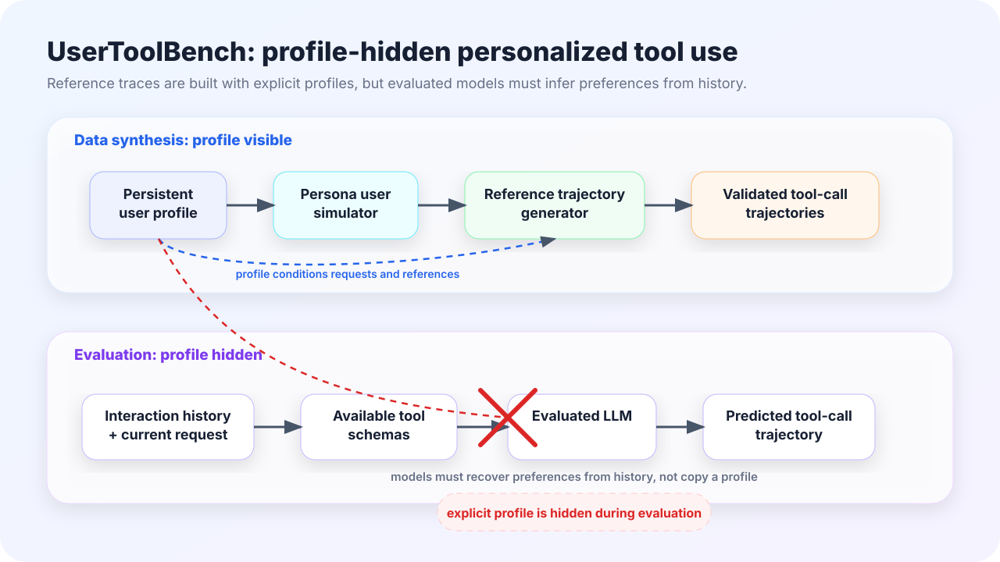
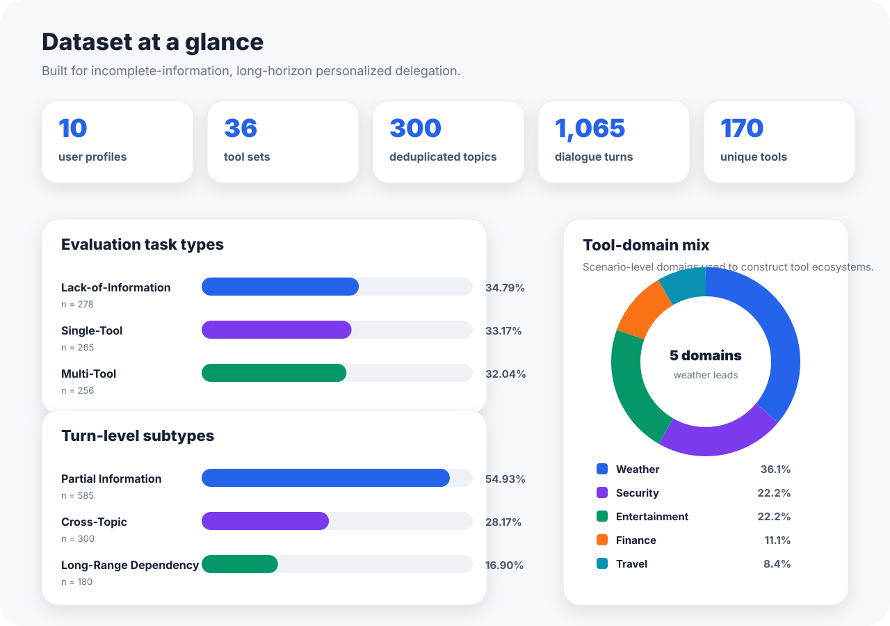
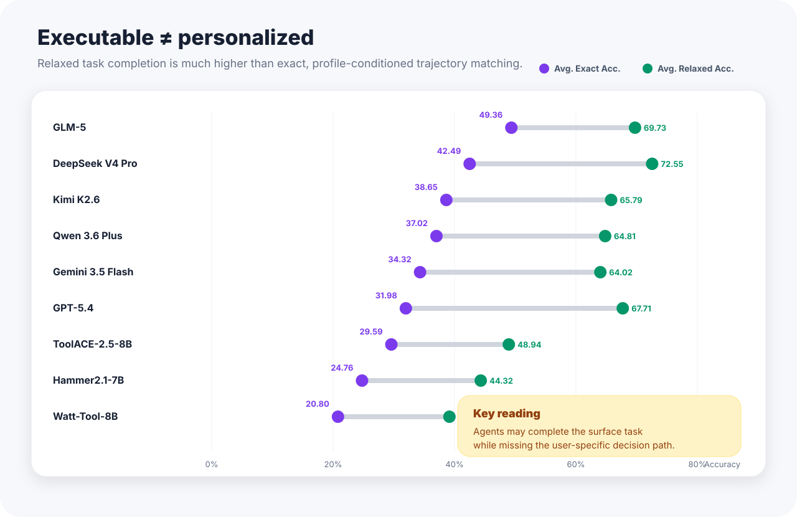
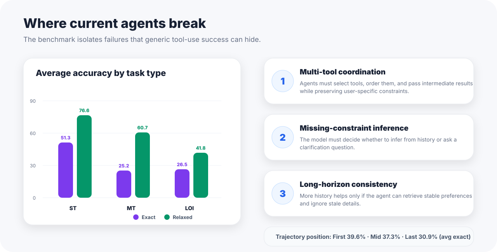

Hidden profile, visible history
The evaluated model must recover stable preferences from previous interactions rather than reading an explicit persona.
UserToolBench evaluates personalized decision making in tool-use LLMs. Models see the interaction history, current request, and tool schemas—but not the explicit user profile—so success requires preference inference, clarification judgment, and long-horizon behavioral consistency.

The benchmark is designed around incomplete requests: the agent must infer recoverable constraints from history, ask when information is genuinely missing, and express personalization through executable tool-call trajectories.
Most personalization benchmarks ask whether an answer sounds user-specific. UserToolBench instead asks whether the assistant chooses the right tools, arguments, clarification behavior, and multi-step plan for the user it represents.
The evaluated model must recover stable preferences from previous interactions rather than reading an explicit persona.
Personalization is measured through structured tool-call trajectories, not only final natural-language responses.
Requests may depend on earlier milestones, forcing the model to retrieve relevant history and ignore stale details.
UserToolBench combines structured persona information, public API-style tool ecosystems, and long-horizon multi-turn trajectories.

Lack-of-information, single-tool, and multi-tool tasks are intentionally balanced so the benchmark tests more than one-shot API selection.
Partial-information turns dominate, while cross-topic and long-range dependency turns test whether agents can connect distant evidence.
Weather, security, entertainment, finance, and travel domains create user-preference-sensitive decision points.
Reference trajectories are constructed with access to persistent user profiles. During evaluation, the model receives only the accumulated interaction history, the current request, and available tool schemas.
The central question is not “Can the model call a tool?” but “Can it delegate correctly for this user?”
Across evaluated tool-use LLMs, relaxed task completion is much higher than exact trajectory matching. This means agents can often complete the surface request while still missing the user-specific decision path.


Measure whether a tool-use model can act as a reliable delegate for a persistent user, not just execute explicit instructions.
Analyze whether long interaction histories help or hurt when relevant preferences are distributed across earlier conversations.
Study when models should ask the user versus infer missing constraints from stable historical behavior.
Replace the placeholder links below with your GitHub, Hugging Face, Zenodo, or project assets.
| Resource | Description | Link |
|---|---|---|
| Paper | Full benchmark paper and appendix. | paper.pdf |
| Dataset | Sanitized profiles, tool schemas, interaction contexts, and reference trajectories. | Hugging Face dataset |
| Code | Evaluation scripts and data loading utilities. | GitHub repository |
| License | Dataset artifacts: CC BY-NC 4.0. Code: replace with your chosen software license. | License details |
@inproceedings{usertoolbench2026,
title = {UserToolBench: A User-Profile-Hidden Benchmark for Personalized Decision Making in Tool-Use LLMs},
author = {Anonymous},
booktitle = {Proceedings of EMNLP},
year = {2026}
}